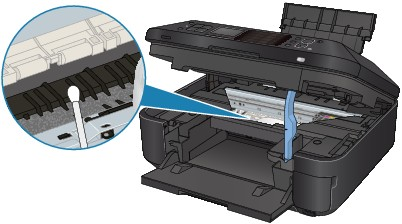

If protrusions inside the machine are stained, wipe off any ink from the protrusions using a cotton swab or the like.
 Important
Important-
Be sure to turn off the power and unplug the power cord before cleaning the machine.
-
The power cannot be turned off while the machine is sending or receiving a fax, or when the received fax or unsent fax are stored in the machine's memory. Make sure if the machine completed sending or receiving all the faxes before disconnecting the power cord.
-
The machine cannot send or receive faxes when the power is turned off.
-
If you unplug the power cord, all the faxes stored in the machine's memory will be deleted.
Print the necessary faxes or save them to the memory card/USB flash drive before unplugging the power cord.
-
